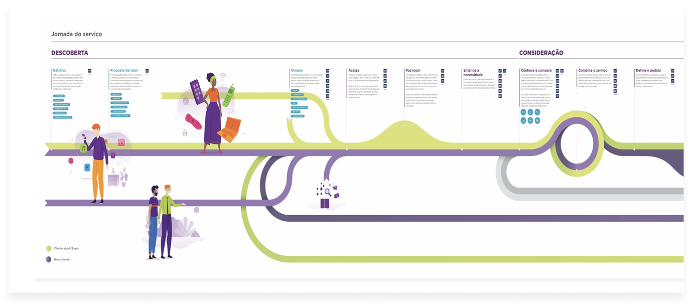
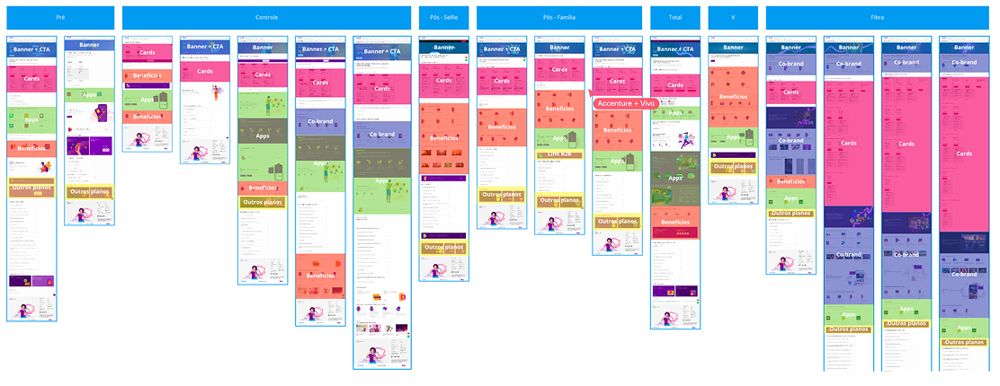
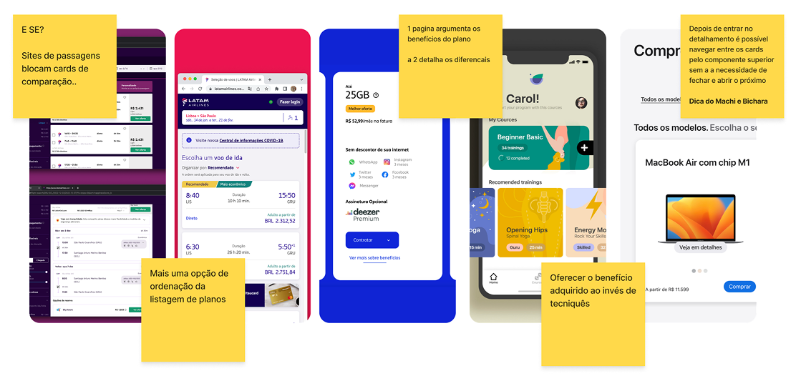
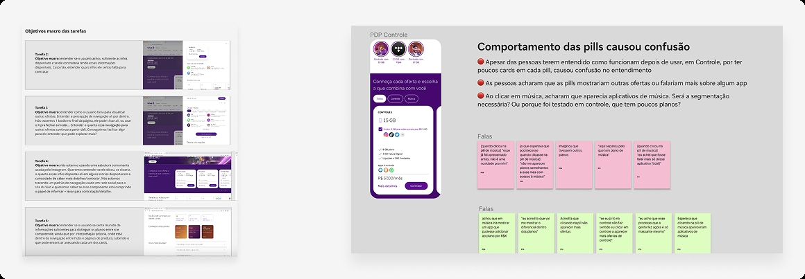

Vivo
Vitrines e Cards Storefronts and Cards
Clareza e simplicidade para apoiar a decisão de escolha de planos Clarity and simplicity to support plan-choice decisions
Contexto Context
O projeto PROX foi uma iniciativa de pesquisa com o objetivo de identificar oportunidades baseadas nas reais necessidades dos clientes, visando redesenhar a experiência de compras digitais e fortalecer a relação com a marca. Ao longo da pesquisa, foram identificadas dores recorrentes relacionadas à dificuldade de avaliar, comparar e entender os benefícios dos planos disponíveis nos canais digitais. The PROX project was a research initiative aimed at identifying opportunities based on customers' real needs, with the goal of redesigning the digital shopping experience and strengthening the relationship with the brand. Throughout the research, we identified recurring pain points around the difficulty of evaluating, comparing, and understanding the benefits of the plans available across digital channels.
Essas dores impactavam diretamente a tomada de decisão, tornando a experiência complexa e pouco intuitiva. A partir desse diagnóstico, algumas iniciativas foram priorizadas pelo time de design, evoluindo para o projeto de Vitrines & Cards, com foco em simplificar a escolha e tornar a navegação mais clara e eficiente. These pain points directly affected decision-making, making the experience complex and unintuitive. Based on that diagnosis, the design team prioritized a few initiatives, which evolved into the Storefronts & Cards project, focused on simplifying the choice and making navigation clearer and more efficient.
Problema Problem
Usuários tinham dificuldade em comparar opções e entender os benefícios dos planos devido ao excesso de informação, linguagem pouco clara e inconsistências entre diferentes páginas e canais. Users struggled to compare options and understand plan benefits because of information overload, unclear language, and inconsistencies across different pages and channels.
Objetivo Goal
Redesenhar vitrines e cards de planos para facilitar a comparação, melhorar a compreensão dos benefícios e apoiar decisões mais seguras, alinhando estratégia de negócio e usabilidade. Redesign plan storefronts and cards to make comparison easier, improve understanding of the benefits, and support more confident decisions, aligning business strategy with usability.
Meu papel My role
Atuei como Product Designer em um time multidisciplinar, participando do entendimento do problema, construção das hipóteses, desenho das soluções, condução de testes de usabilidade e consolidação de recomendações para evolução do produto. I worked as Product Designer in a multidisciplinary team, taking part in understanding the problem, building hypotheses, designing the solutions, running usability tests, and consolidating recommendations for the product's evolution.
Iniciativas Initiatives
Com base nas dores identificadas ao longo da jornada do cliente, diversas iniciativas foram propostas para solucioná-las. Dentre as mais acionáveis pelo design, atuei em duas, junto com o time dedicado a esse projeto. Based on the pain points identified along the customer journey, several initiatives were proposed to address them. Among those most actionable by design, I worked on two, together with the team dedicated to this project.
A primeira iniciativa, “Ocasião de Uso”, tinha como premissa reorganizar planos, pacotes e produtos de acordo com diferentes contextos de uso. O objetivo era alinhar a comunicação da empresa e tornar a navegação mais intuitiva para o cliente. The first initiative, “Ocasião de Uso” (Usage Occasion), was premised on reorganizing plans, packages, and products according to different usage contexts. The goal was to align the company's communication and make navigation more intuitive for the customer.
A segunda iniciativa, “Básico Encantador”, tinha como objetivo melhorar a composição e reorganização dos planos, simplificando a experiência e facilitando o entendimento das opções disponíveis. The second initiative, “Básico Encantador” (Delightful Basic), aimed to improve how plans were composed and organized, simplifying the experience and making the available options easier to understand.
Essas iniciativas evoluíram, então, para o projeto “Vitrines e Cards”, que teve como objetivo aprimorar a experiência de escolha de um plano, oferecendo mais clareza e facilidade de navegação para os clientes, alinhando estratégia e usabilidade de forma prática e envolvente dentro das vitrines e cards dos planos. These initiatives then evolved into the “Storefronts and Cards” project, which set out to improve the experience of choosing a plan, offering customers more clarity and easier navigation, aligning strategy and usability in a practical, engaging way within the plan storefronts and cards.

O processo The process
Entendimento e benchmarking Understanding and benchmarking
Analisamos as estruturas existentes do site para identificar padrões, repetições e pontos de fricção na jornada de escolha. Em paralelo, realizamos benchmarking com players que utilizam cards como base do fluxo de compra, buscando referências de organização da informação e comparação entre ofertas. We analyzed the site's existing structures to identify patterns, repetition, and friction points in the choice journey. In parallel, we benchmarked players that use cards as the basis of their purchase flow, looking for references on information organization and offer comparison.


Estruturação da informação Information structuring
Com base nas dores identificadas e nas hipóteses levantadas, reorganizamos as vitrines e os cards priorizando as informações mais relevantes para a decisão de compra. Elementos comuns entre os planos foram agrupados, enquanto diferenciais e benefícios específicos ganharam mais destaque. Based on the pain points identified and the hypotheses raised, we reorganized the storefronts and cards, prioritizing the information most relevant to the purchase decision. Elements common across plans were grouped together, while distinctive features and specific benefits were given more prominence.
Design da solução Solution design
Os cards passaram a evidenciar atributos-chave como preço e benefícios principais, conforme validações em testes de usabilidade. Informações secundárias foram organizadas fora do card, reduzindo carga cognitiva e facilitando a comparação entre opções. O uso de motion e elementos visuais ajudou a tornar a experiência mais leve e escaneável, mesmo diante de grande volume de informações. Cards began highlighting key attributes such as price and main benefits, as validated in usability testing. Secondary information was organized outside the card, reducing cognitive load and making it easier to compare options. Motion and visual elements helped make the experience lighter and easier to scan, even with a large volume of information.
Validação Validation
Conduzimos 16 testes de usabilidade com usuários segmentados por mindset, avaliando clareza das informações, entendimento dos benefícios e apoio visual à tomada de decisão. O roteiro e a análise dos insights foram realizados pelo time de design. We ran 16 usability tests with users segmented by mindset, evaluating clarity of information, understanding of the benefits, and visual support for decision-making. The script and the analysis of the insights were carried out by the design team.

Resultado Result
A maior parte das hipóteses foi validada nos testes, com apenas um ponto crítico identificado. Como se tratava de um projeto conceitual em contexto de consultoria e houve descontinuidade do contrato, a solução não foi implementada. A entrega final incluiu fluxos, vitrines, cards e recomendações estratégicas para futuras iterações, servindo como base para decisões de produto e negócio. Most hypotheses were validated in testing, with only one critical issue identified. Since this was a conceptual project within a consulting engagement, and the contract was discontinued, the solution was never implemented. The final delivery included flows, storefronts, cards, and strategic recommendations for future iterations, serving as a foundation for product and business decisions.